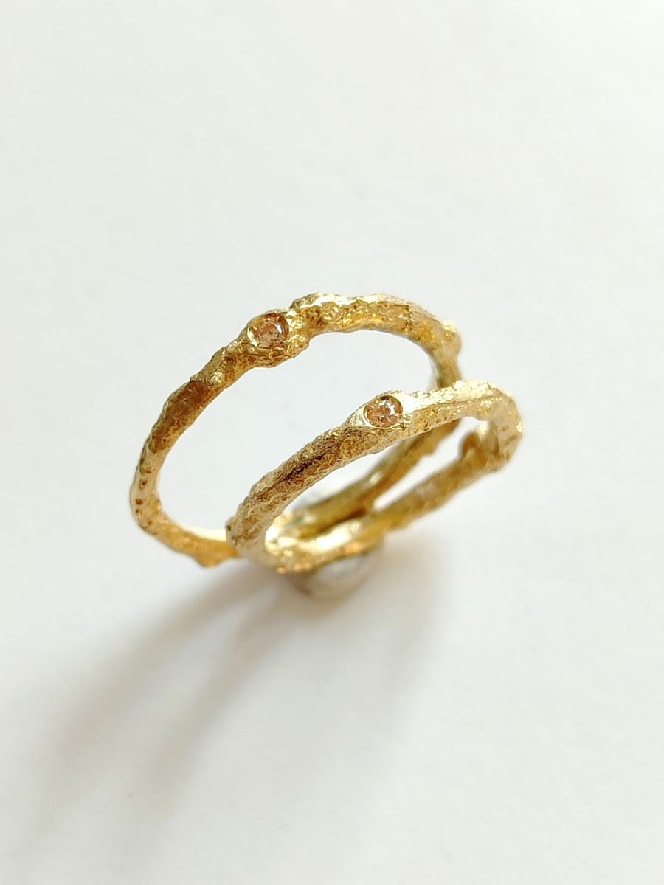

Dal 2015 · un mestiere di cinquant'anni
Cinquant'anni, di padre in figlio
Belè ha aperto come bottega nell'aprile del 2015, ma il suo mestiere nasce più di cinquant'anni fa — tramandato di padre in figlio, giorno dopo giorno, chini sul banchetto da lavoro.
«La cultura del riutilizzo si sposa con un gusto raffinato — gioielli straordinari, fuori dal tempo.»
L'idea è mettere ogni competenza dell'arte orafa direttamente al servizio del cliente: dare forma ai desideri più personali. Uno scorcio di Milano dove si incrocia vecchio e nuovo, e dove un mestiere antico resta vivo — semplicemente, andando in bottega.
Giacomo e il figlio · orafi